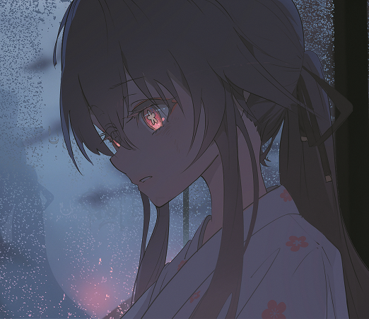

Hello! I'm l2stack a bukkit, web, java developer and I'm also a minecraft player. Do you want to play minecraft with me?. Click [Minecraft] in the nav bar and download the game launcher.
If you do not have an account on my server you need to register first. Please click the [Register] button below.